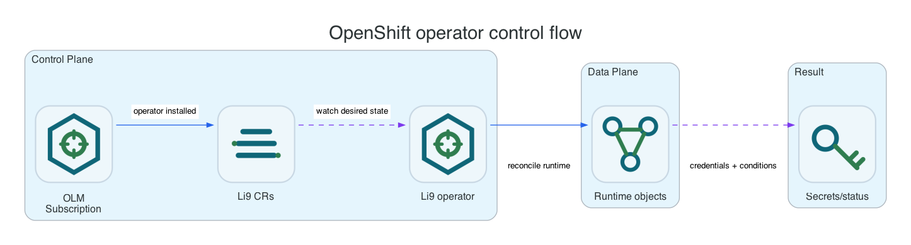

Reference / Platform / OpenShift
OpenShift Operator reference.
Use this reference when OLM installs the Li9 S3 operator and Kubernetes custom resources are the control plane for storage, buckets, access, lifecycle, replication, observability, and documentation delivery.
The OpenShift operator installation is the only distribution that exposes Li9 S3 CRDs. Helm, Linux, and Windows installations use their own platform configuration surfaces and should not show CR examples as their primary reference.
Ownership Model

| Layer | Owner | OpenShift Objects | Operational Rule |
|---|---|---|---|
| Operator lifecycle | OLM | CatalogSource, OperatorGroup, Subscription, CSV | Upgrade by changing the subscribed channel or bundle, not by editing operator Deployments directly. |
| Storage runtime | S3Storage | Deployments, StatefulSets, Services, PVCs, Routes, ServiceMonitors, PrometheusRules | The operator is the single writer for generated runtime resources. |
| Bucket lifecycle | S3Bucket and companion CRs | Bucket status, generated Secrets, runtime configuration calls | Application teams request buckets through CRs or supported OBC/COSI flows. |
| Documentation endpoint | S3Documentation | One docs Deployment, Service, optional Route | The docs pod aggregates runtime docs and operator/platform docs behind one endpoint. |
Primary CRDs
| CRD | Purpose | Typical User | Related Reference |
|---|---|---|---|
S3Storage | Deploys one Li9 S3 runtime instance and configures storage, metadata, gateway, observability, placement, regions, and deletion policy. | Platform administrator | CR examples |
S3Bucket | Declares a bucket on a selected runtime and writes endpoint/credential status. | Tenant admin | OpenShift consumption APIs |
S3BucketAccess | Creates scoped AWS-compatible credentials for one bucket. | Application engineer | OpenShift consumption APIs |
S3BucketPolicy | Attaches AWS-style bucket policy behavior to the runtime policy service. | Security team | Policies and authorization |
S3BucketLifecycle | Configures lifecycle expiration, transitions, multipart cleanup, and restore behavior. | Storage admin | Lifecycle policy and restore |
S3ArchivePolicy | Defines archive placement and bucket archive policy. | Storage admin | S3 storage class and PVC placement |
S3ReplicationTarget | Defines reusable remote S3-compatible endpoints and credential bindings for global replication. | Storage admin | Replication |
S3BucketReplication | Defines simplified local or global replication rules. The operator generates the AWS-compatible replication document plus Li9 target extension. | Storage admin | Replication |
S3Documentation | Publishes this documentation site for the selected installation. | Platform administrator | Documentation delivery |
OpenShift-Specific Decisions
| Decision | Where It Lives | Guidance |
|---|---|---|
| Node selection and failure domains | S3Storage.spec.placement and storage/metadata placement fields | Use labels and tolerations to target storage nodes. Use failure-domain labels for node, zone, or datacenter spread. |
| PVC topology and expansion | S3Storage.spec.storage | Use PerNodePVC for RWO storage nodes, SharedPVC for RWX-backed S3-over-PVC, and dedicated metadata PVCs when metadata latency matters. |
| Endpoint exposure | S3Storage.spec.gateway | Routes are optional and disabled by default. Internal Service endpoints are used when no external Route is admitted. |
| Metrics and alerts | S3Storage.spec.observability or S3StorageObservability | Enable ServiceMonitor, PrometheusRule, and dashboard delivery for user-workload monitoring. |
| Bucket consumption | S3Bucket, S3BucketAccess, OBC, COSI | Use native Li9 CRs for advanced product features. Use OBC/COSI when a workload already expects those Kubernetes consumption APIs. |
| Interactive bucket browsing | S3Storage.spec.console and OpenShift RBAC on s3buckets/objects | Use the OAuth-protected bucket browser for human access. Keep application access on S3BucketAccess credentials. |